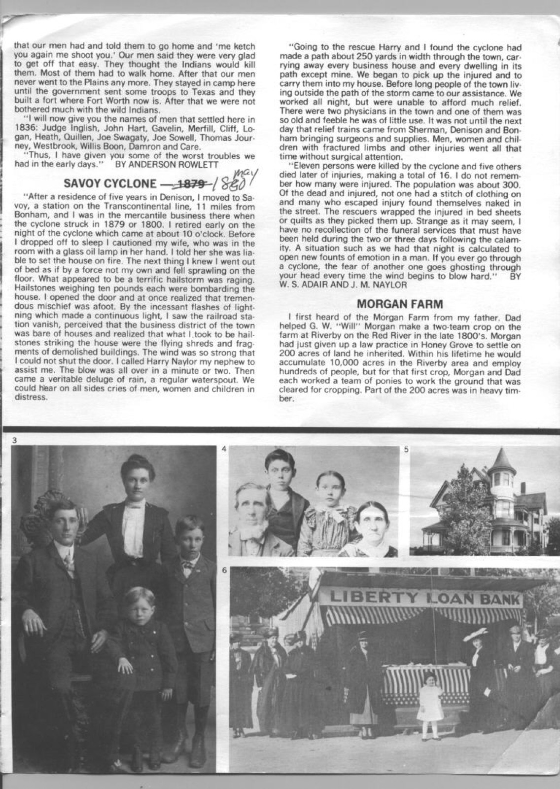

The blacksmith's name in the archive is given only as Mr. Brooks. He was a working man in a railroad town, which meant he dealt in iron and heat and the practical necessities of horses and machinery. He was not, presumably, the sort of man who acted on feelings he couldn't explain.
But on the evening of May 28, 1880, something felt wrong.
The sources do not say what time it was when he moved his family — whether it was twilight or full dark, whether the sky had already begun to look unusual, whether his wife questioned him or trusted his instinct. The newspaper accounts, filed in the days after the storm, record only the fact: he moved them out. He took his family away from the house. And then, from wherever they had gone — a neighbor's house, perhaps, or simply into the open air — he watched the cyclone take his home apart.

The cyclone was roughly 178 yards wide. In that width it destroyed forty houses and every business in town but one. Mr. Brooks's house was one of the forty. If he had not moved his family, they would have been inside it.
This kind of story travels. It is the kind of story that gets told at every gathering in the years after a disaster — the people who almost died, the near misses, the strange escapes. In a town of four hundred people, fifty or sixty injured and nine dead, everyone knew someone on either side of that line. The ones who survived uninjured would have felt, for the rest of their lives, the particular weight of having been lucky. Mr. Brooks would have felt something slightly different: not just luck, but the residue of having listened to something he couldn't name.
A blacksmith named Mr. Brooks had moved his family out of their house before the storm, acting on a premonition, and watched it destroyed from a distance. — North Texas Express, June 1880
There is a rationalist explanation available. The sky on the North Texas plains before a major tornado can do unusual things — a greenish cast to the light, a particular stillness, a pressure change that the body registers before the mind understands. Mr. Brooks may have been a man who paid close attention to the sky, as anyone who worked with horses and fire had reason to. His premonition may have been meteorological knowledge operating below the level of conscious thought.
But the newspaper does not record it that way. The newspaper records it as a premonition. And the result was the same regardless of its source: his family was alive when the house was gone, watching the wreckage from a distance in the dark North Texas night, with the rain coming down and the whole town in pieces around them.
All Tales